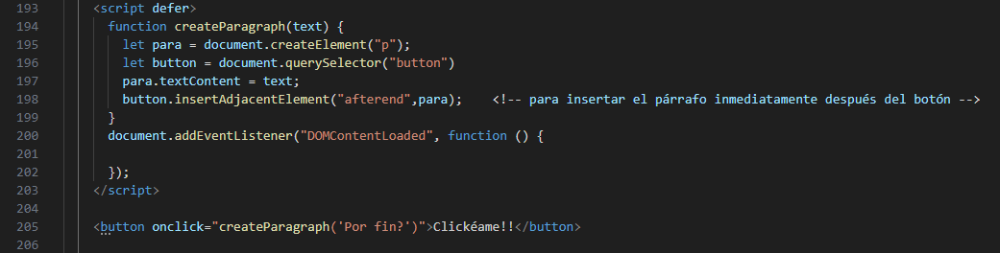

Introducción a Javascript
Fuente: Primeros pasos con JavaScript
¿Qué es Javascript?
Es un lenguaje de secuencias de comandos que te permite crear contenido de actualización dinámica, controlar multimedia, animar imágenes y prácticamente todo lo demás. El núcleo del lenguaje JavaScript del lado del cliente consta de algunas características de programación comunes que te permiten hacer cosas como:
- Almacenar valores útiles dentro de variables.
- Operaciones sobre fragmentos de texto.
- Eecutar código en respuesta a ciertos eventos que ocurren en una página web.
- Y mucho más!
Lo que aún es más emocionante es la funcionalidad construida sobre el lenguaje JavaScript de lado del cliente. Las denominadas interfaces de programación de aplicaciones (API) te proporcionan superpoderes adicionales para utilizar en tu código JavaScript.
Las API son conjuntos de bloques de construcción de código listos para usar que permiten a un desarrollador implementar programas que de otro modo serían difíciles o imposibles de implementar. Hacen lo mismo para la programación que los kits de muebles prefabricados para la construcción de viviendas
Generalmente se dividen en dos categorías: APIs del navegador y APIs de terceros:

- APIs del navegador
- La API del DOM (Document Object Model) te permite manipular HTML y CSS, crear, eliminar y cambiar el HTML, aplicar dinámicamente nuevos estilos a tu página, etc.
- La API de Geolocalización recupera información geográfica. Así es como Google Maps puede encontrar tu ubicación y trazarla en un mapa.
- Las APIs Canvas y WebGL te permiten crear gráficos animados en 2D y 3D - consulta Experimentos de Chrome y webglsamples.
- APIs de audio y video como HTMLMediaElement y WebRTC te permiten hacer cosas realmente interesantes con multimedia.
- Las APIs de terceros no están integradas en el navegador de forma predeterminada y, por lo general, debes
obtener su código e información de algún lugar de la Web. Por ejemplo:
- La API de Twitter te permite hacer cosas como mostrar tus últimos tweets en tu sitio web.
- La API de Google Maps y la API de OpenStreetMap (info) te permiten insertar mapas personalizados en tu sitio web y otras funciones similares.
¿Qué está haciendo Javascript en tu página?
Cuando cargas una página web en tu navegador, estás ejecutando tu código (HTML, CSS y JavaScript) dentro de un entorno de ejecución (la pestaña del navegador). Esto es como una fábrica que toma materias primas (el código) y genera un producto (la página web).

Un uso muy común de JavaScript es modificar dinámicamente HTML y CSS para actualizar una interfaz de usuario, a través de la API del modelo de objetos del documento. el código de tus documentos web generalmente se cargan y ejecutan en el orden en que aparece en la página. Si JavaScript se carga e intenta ejecutarse antes de que se hayan cargado el HTML y el CSS al que afecta, pueden producirse errores. Por ello hay Estrategias de carga de scripts.
Seguridad del navegador
Cada pestaña del navegador tiene su propio depósito separado para ejecutar código (entornos de ejecución) — esto significa que, en la mayoría de los casos, el código de cada pestaña se ejecuta de forma completamente independiente y el código de una pestaña no puede afectar el código en otra pestaña, o en otro sitio web.
Orden de ejecución de Javascript
Cuando el navegador encuentra un bloque de JavaScript, generalmente lo ejecuta en orden, de arriba a abajo. Esto significa que debes tener cuidado con el orden en el que colocas las cosas. Por ejemplo:
const para = document.querySelector("p");
para.addEventListener("click", updateName);
function updateName() {
let name = prompt("Enter a new name");
para.textContent = "Player 1: " + name;
}
Aquí seleccionamos un párrafo de texto (línea 1), luego adjuntamos un detector de eventos (línea 3) de modo que cuando se hace clic en el párrafo, el bloque de código updateName() (líneas 5-8) se ejecuta. La función updateName() pide al usuario un nuevo nombre y luego inserta ese nombre en el párrafo para actualizar la pantalla.
Si se cambiara el orden de las dos primeras líneas de código, ya no funcionaría — en su lugar, se obtendría un error en la consola del desarrollador del navegador — TypeError: para is undefined. Esto significa que el objeto para aún no existe, por lo que no podemos agregarle un detector de eventos.
Nota: Este es un error muy común; hay que tener cuidado de que los objetos a los que se hace referencia existan en el código antes de intentar hacer algo con ellos.
Código interpretado versus compilado
JavaScript es un lenguaje de programación interpretado ligero. El navegador web recibe el código JavaScript en su forma de texto original y ejecuta el script a partir de ahí. Desde un punto de vista técnico, la mayoría de los intérpretes de JavaScript modernos utilizan una técnica llamada compilación en tiempo real (JIT) para mejorar el rendimiento; el código fuente de JavaScript se compila en un formato binario más rápido mientras se usa el script, de modo que se pueda ejecutar lo más rápido posible. Sin embargo, JavaScript todavía se considera un lenguaje interpretado, ya que la compilación se maneja en el entorno de ejecución, en lugar de antes.
Código de lado del servidor versus de lado del cliente
El código de lado del cliente es un código que se ejecuta en la computadora del usuario — cuando se ve una página web, el código de lado del cliente de la página se descarga, luego se ejecuta y se muestra en el navegador.
El código de lado del servidor, por otro lado, se ejecuta en el servidor, luego sus resultados se descargan y se muestran en el navegador. Ejemplos de lenguajes web populares de lado del servidor incluyen a ¡PHP, Python, Ruby, ASP.NET y... JavaScript! JavaScript también se puede utilizar como lenguaje de lado del servidor, por ejemplo, en el popular entorno Node.js - Más info en Sitios web dinámicos — Programación de lado del servidor.
Código dinámico versus estático
se refiere a la capacidad de actualizar la visualización de una página web/aplicación para mostrar diferentes cosas en diferentes circunstancias, generando contenido nuevo según sea necesario. El código de lado del servidor genera dinámicamente nuevo contenido en el servidor, p. ej. extraer datos de una base de datos, mientras que JavaScript de lado del cliente genera dinámicamente nuevo contenido dentro del navegador del cliente, p. ej. creando una nueva tabla HTML, llenándola con los datos solicitados al servidor y luego mostrando la tabla en una página web que se muestra al usuario. El significado es ligeramente diferente en los dos contextos, pero relacionado, y ambos enfoques (de lado del servidor y de lado del cliente) generalmente funcionan juntos.
Una página web sin contenido que se actualiza dinámicamente se denomina estática — simplemente muestra el mismo contenido todo el tiempo.
¿Cómo agregar JavaScript a tu página?
JavaScript se aplica a tu página HTML de manera similar a CSS. Mientras que CSS usa elementos <link> para aplicar hojas de estilo externas y elementos <style> para aplicar hojas de estilo internas a HTML, JavaScript solo necesita un amigo en el mundo de HTML: el elemento <script>(en-US).
JavaScript interno
Este es un Ejemplo de JS interno, es decir contenido dentro de nuestra página html.
Javascript externo
- Crear un archivo "script.js" en el mismo directorio que tu HTML (ejemplo anterior).
- Reemplazamos el elemento script por:
<script src="script.js" defer></script>Nota: El atributo defer indica al navegador que no espere por el script, sino que siga procesando el HTML y construyendo el DOM. El script se carga en segundo plano y se ejecuta cuando el DOM está completo. Esto evita que el script bloquee la visualización de la página o interfiera con otros elementos del DOM. Además, el atributo defer garantiza que los scripts se ejecuten en el orden en que aparecen en el documento, lo que puede ser importante si hay dependencias entre ellos
- Dentro del script, agregaremos el código (el mismo del ejemplo pasado)
- Aquí podemos ver otros ejemplos de códigos. *Nota estos ejemplos fueron los primeros realizados y probablemente la forma de organizar el html y donde colocar los scripts no son los correctos, solo es para visualizar los diferentes scripts.
Por lo general, hacerlo de este modo es mejor en términos de organización del código y para hacerlo reutilizable en diferentes archivos HTML. Además, facilita su lectura.
Controladores de JavaScript en línea
A veces podemos encontrarnos con fragmentos de código JavaScript real dentro de HTML. Podría verse algo similar a esto:
Pero... Es una mala práctica contaminar tu HTML con Javascript y es ineficiente; habría que incluir el atributo onclick="createParagraph()" en cada botón al que desees que se aplique Javascript. El uso de una construcción de Javascript pura te permite seleccionar a todos los botones usando una instrucción. El código que usamos anteriorrmente para cumplir este propósito se ve así:
Ejemplo:
const buttons = document.querySelectorAll("button");
for (let i = 0; i < buttons.length; i++) {
buttons[i].addEventListener("click", createParagraph);
}
Esto puede ser un poco más largo que el atributo onclick, pero funcionará para todos los botones, sin importar cuántos haya en la página, ni cuántos se agreguen o eliminen. No es necesario cambiar el JavaScript.
Estrategias para la carga de scripts
Hay una serie de problemas relacionados con la carga de los scripts en el momento adecuado. Un problema común es que todo el HTML de una página se carga en el orden en que aparece. Si estás utilizando JavaScript para manipular elementos en la página (o exactamente, el Modelo de objetos del documento (en-US)), tu código no funcionará si el JavaScript se carga y procesa antes que el HTML que estás intentando haga algo.
En los ejemplos de código anteriores, en los ejemplos internos y externos, JavaScript se carga y se ejecuta en el encabezado del documento, antes de analizar el cuerpo HTML. Esto podría causar un error, por lo que hemos utilizado algunas construcciones para solucionarlo. En el ejemplo interno, podemos ver esta estructura alrededor del código:
document.addEventListener("DOMContentLoaded", function() {
});
Este es un detector de eventos, que escucha el evento "DOMContentLoaded" del navegador, lo cual significa que el cuerpo HTML está completamente cargado y analizado. El JavaScript dentro de este bloque no se ejecutará hasta que se active ese evento.
En el ejemplo externo, usamos una función de JavaScript más moderno para resolver el problema, el atributo defer, que le dice al navegador que continúe descargando el contenido HTML una vez que se ha alcanzado la etiqueta del elemento <script>. Tanto el script como el HTML se cargarán simultáneamente y el código funcionará. Solo funciona para scripts externos.
Hola JavaScript - Tipos de Datos
Ver ejemplos.